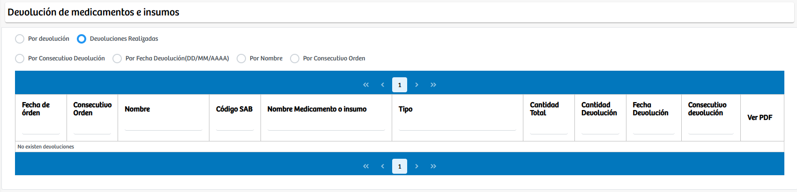

Modulos Sas-Web
Funcionalidades
Devolución
El módulo Devolución de medicamentos e insumos permite gestionar, registrar y consultar las devoluciones realizadas sobre medicamentos o insumos previamente dispensados. Este módulo ofrece dos formas principales de navegación: Por Devolución, donde el usuario puede seleccionar un proveedor y visualizar las devoluciones asociadas a ese origen, y Devoluciones Realizadas, que habilita diferentes criterios de búsqueda como consecutivo de devolución, fecha de devolución, nombre del paciente o consecutivo de la orden.
Una vez seleccionado el filtro, el sistema muestra el listado detallado de devoluciones, incluyendo información como fecha de orden, código SAB, nombre del medicamento o insumo, tipo, cantidad total entregada y cantidad devuelta. Esta herramienta facilita la trazabilidad, control y auditoría de los movimientos de devolución, asegurando una correcta gestión administrativa y clínica de los recursos utilizados en la atención del paciente. En resumen, el módulo centraliza toda la información relacionada con devoluciones, brindando precisión, facilidad de consulta y soporte operativo a las áreas asistenciales y logísticas.